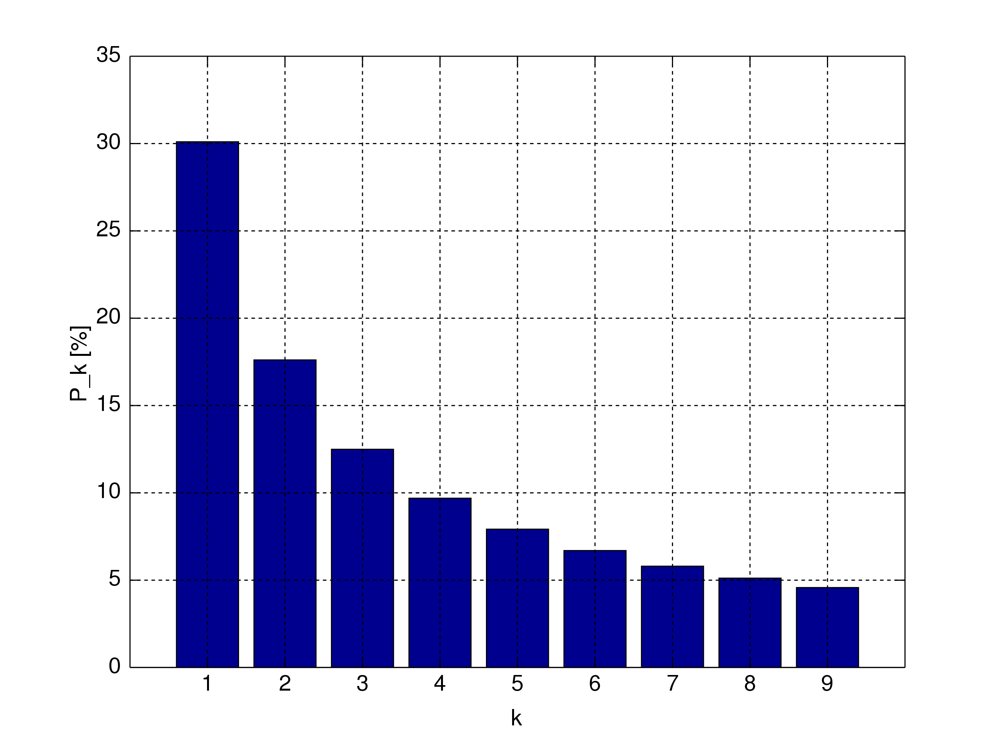
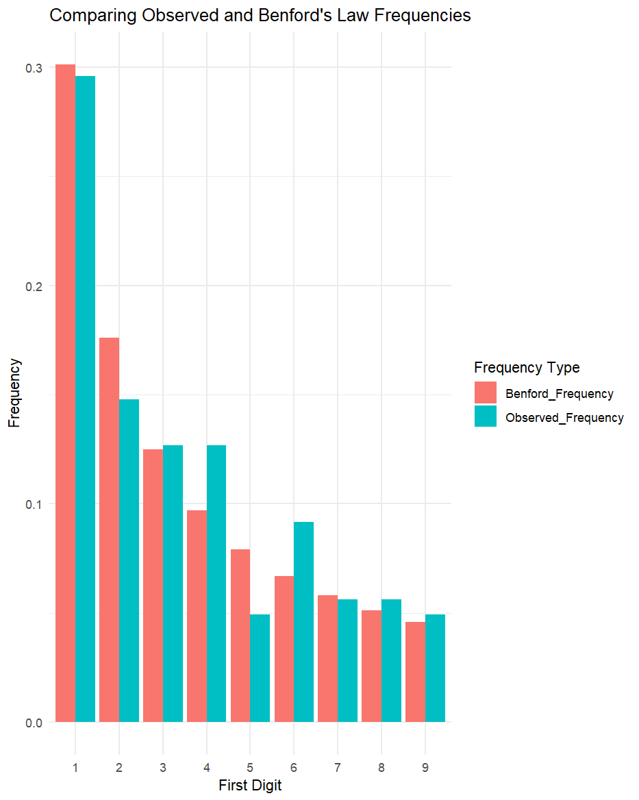

Benford’s Law는..
벤포드의 법칙(Benford’s Law), 또는 첫 번째 숫자 법칙(First-Digit Law)은 다양한 실생활 데이터 집합에서 특정 숫자가 처음 자리에 나타날 확률에 관한 경험적 법칙입니다. 이 법칙은 1881년에 관찰되었으나, 물리학자 프랭크 벤포드(Frank Benford)가 1938년에 이 법칙을 더 널리 알렸기 때문에 그의 이름이 붙었습니다.
벤포드의 법칙에 따르면, 첫 번째 숫자가 n인 데이터의 비율은 다음 공식으로 계산할 수 있습니다:
P(n) = log10(n + 1) - log10(n) = log10(1 + 1/n)
이 공식에 따르면, 첫 번째 숫자가 1일 확률은 약 30.1%, 2일 확률은 약 17.6%, 9일 확률은 약 4.6%입니다.
벤포드의 법칙은 인구, 경제, 과학, 지리 등 다양한 분야의 데이터에 적용됩니다. 벤포드의 법칙은 데이터의 숫자 분포를 분석하는 데 도움이 되며, 이상치 탐지, 부정 행위 감지, 데이터 오류 확인 등에 활용됩니다.
예를 들어 회계 분야에서 벤포드의 법칙을 이용해 부정 회계를 찾아낼 수 있습니다. 벤포드의 법칙에 따르면, 금융 데이터의 첫 자리 숫자 분포는 특정한 패턴을 따르는데, 이 패턴과 크게 벗어난 데이터가 발견되면 부정 행위의 가능성을 의심할 수 있습니다.
[1 ≤ k ≤ 9 에서의 k의 분포 P_k %의 그래프]

Benford’s Law 예제
# Load required packages
library(gapminder)
library(tidyverse)
# Load data from the gapminder package
data <- gapminder
# Filter the dataset to get the most recent population data for each country
latest_data <- data |> filter(year == max(year))
# Extract the first digits from the population data
first_digits <- as.character(latest_data$pop) |> str_sub(1,1) |> as.integer()
# Calculate the frequencies of the first digits
observed_freq <- as.vector(table(first_digits) / length(first_digits))
# Compute the expected frequencies according to Benford's Law
digits <- 1:9
benford_freq <- log10(1 + 1/digits)
# Compare the observed and expected frequencies
comparison <- tibble(
Digit = digits,
Observed_Frequency = observed_freq,
Benford_Frequency = benford_freq
)
# Reshape the data into a tidy format
comparison_tidy <- comparison |>
pivot_longer(cols = c(Observed_Frequency, Benford_Frequency), names_to = "Type", values_to = "Frequency")
# Create a bar plot with ggplot2
ggplot(comparison_tidy, aes(x = factor(Digit), y = Frequency, fill = Type)) +
geom_bar(stat = "identity", position = "dodge") +
labs(title = "Comparing Observed and Benford's Law Frequencies",
x = "First Digit",
y = "Frequency",
fill = "Frequency Type") +
theme_minimal()
# Perform a chi-squared goodness-of-fit test
observed_counts <- table(first_digits)
chisq_test <- chisq.test(observed_counts, p = benford_freq)
# Print the results of the chi-squared test
cat("Chi-squared test statistic:", chisq_test$statistic, "\n")
cat("Degrees of freedom:", chisq_test$parameter, "\n")
cat("p-value:", chisq_test$p.value, "\n")
# Check if the observed data follows Benford's Law (using a significance level of 0.05)
if (chisq_test$p.value > 0.05) {
cat("The data follows Benford's Law.\n")
} else {
cat("The data does not follow Benford's Law.\n")
}
Chi-squared test for given probabilities
data: observed_counts
X-squared = 4.9697, df = 8, p-value = 0.7608
# The data follows Benford's Law.